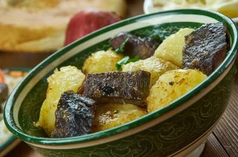

Back
Kuyrdak

Description
Kuyrdak is a hearty, traditional roast typically made immediately after
a harvest or slaughter. It features a mix of meat and offal (liver, heart,
and kidneys) sautéed with onions and often potatoes to create a rich,
savory dish.
Ingredients
- 1 kg Mixed meat and offal (lamb or beef)
- 2 Large onions
- 3-4 Potatoes, cubed
- 200g Fat or oil
- Salt and pepper
Steps
- Heat fat in a heavy cauldron (kazan).
- Add the meat and offal, frying until browned.
- Add chopped onions and continue to fry until soft.
- Add cubed potatoes and a small amount of water or broth.
- Cover and simmer until the potatoes are tender and
the liquid has reduced to a thick sauce.